Build Muscle & Burn Fat Simultaneously — Just 18 Minutes from Elm Grove
Elm Grove residents know what quality looks like — and they notice when it's missing. At Bay View Chiropractic, we offer the kind of personalized, private Emsculpt NEO experience that discerning clients appreciate: one-on-one attention, no rushed appointments, and a clinical team that takes time to understand your goals. The drive is just 18 minutes via Bluemound Road east into Bay View.
Equivalent to 20,000 crunches in 30 minutes
Permanent fat cell destruction through apoptosis
Return to normal activities immediately
Safe, effective, and clinically proven
Address:
3116 S Kinnickinnic Ave
Milwaukee, WI 53207
Sculpt and strengthen multiple body areas
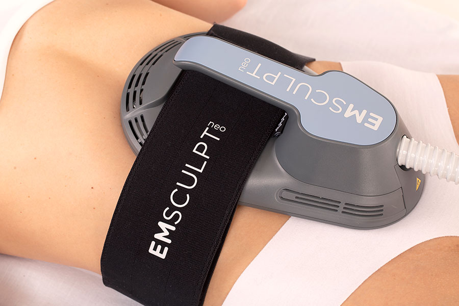
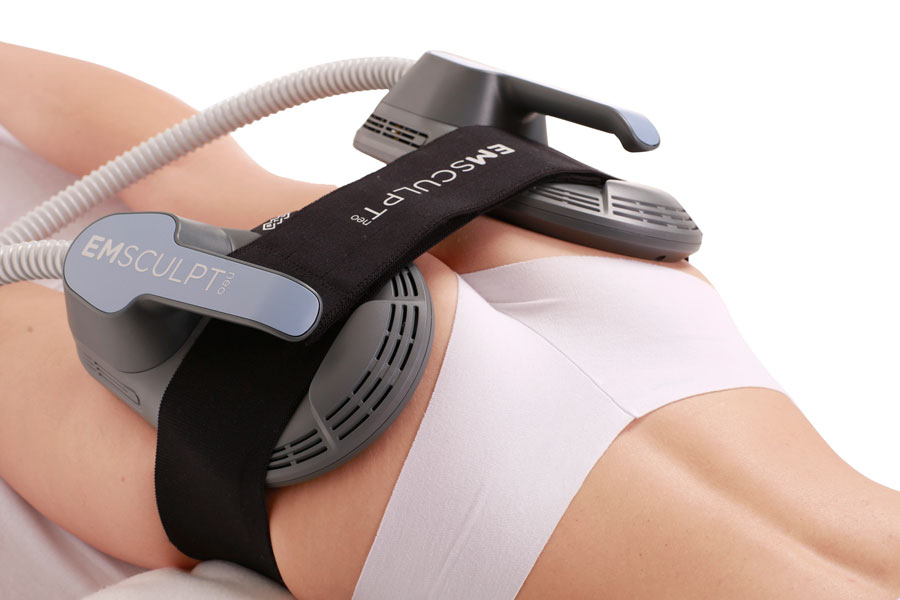
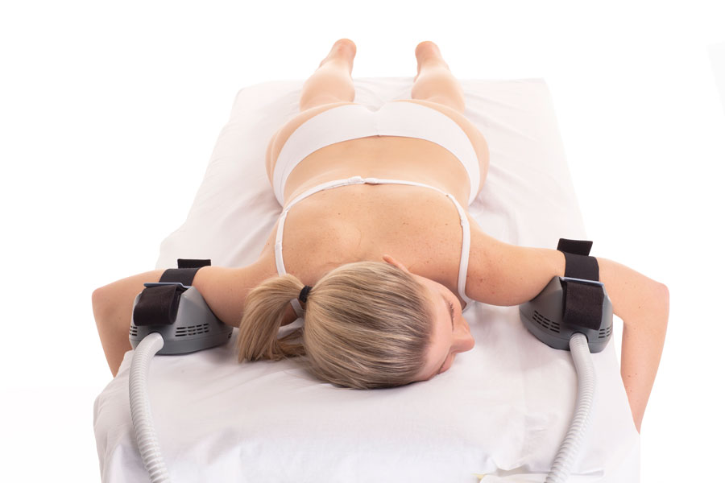
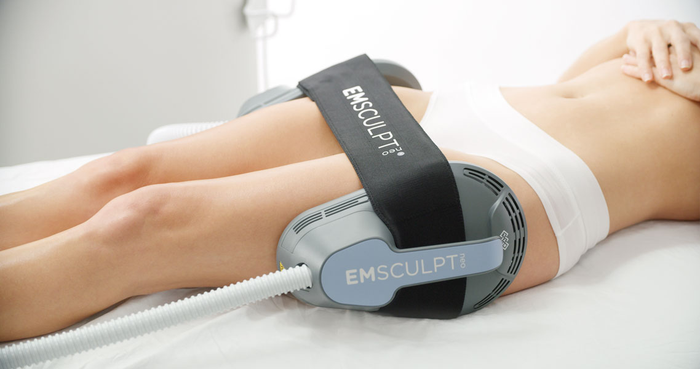
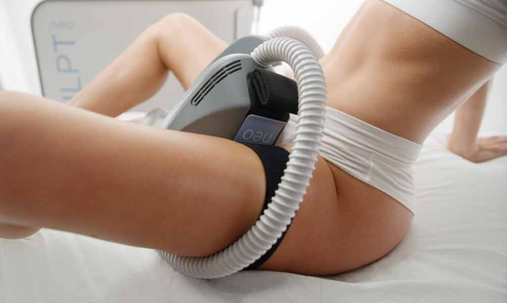
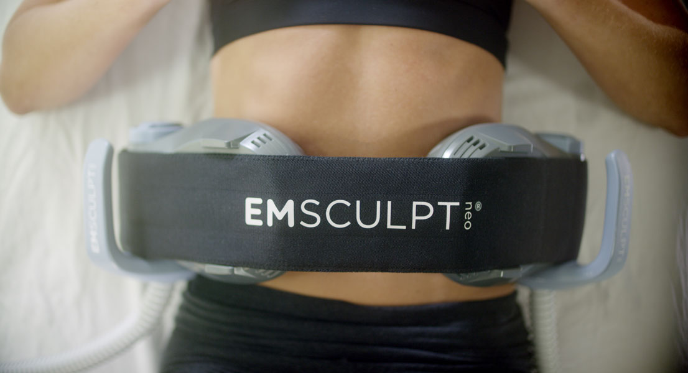
Three applicator sizes for precise body sculpting
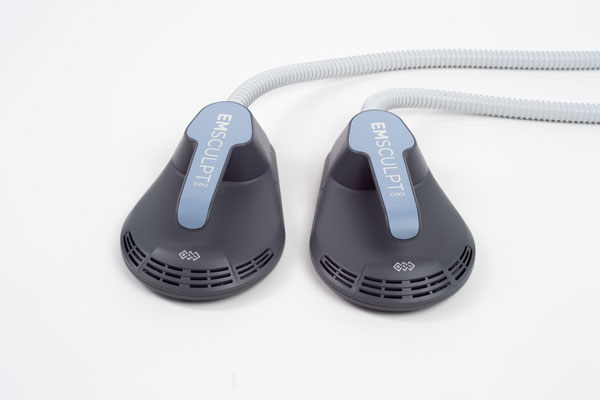
Perfect for abdomen and buttocks. Covers maximum surface area for comprehensive muscle building and fat reduction.
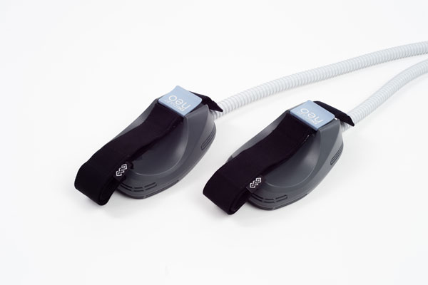
Ideal for arms, calves, and smaller muscle groups. Targeted treatment for precise sculpting.
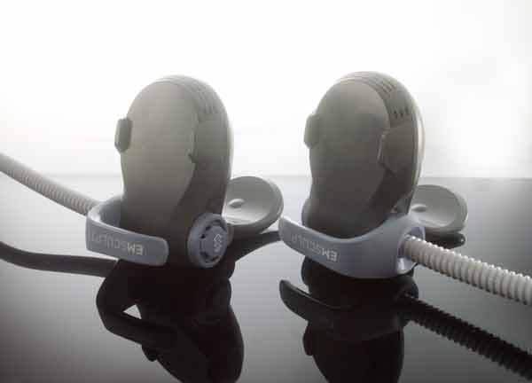
Specifically designed for flanks and love handles. Targets stubborn side fat with precision.
See the transformation possible with Emsculpt NEO
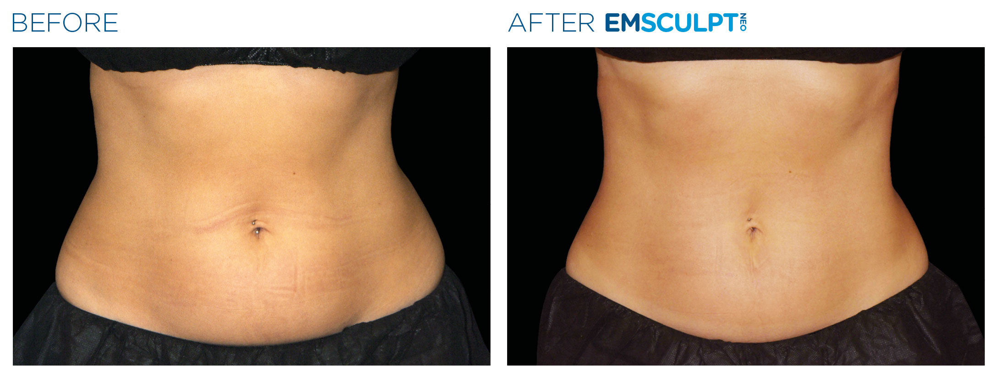
Abdomen - After 4 treatments
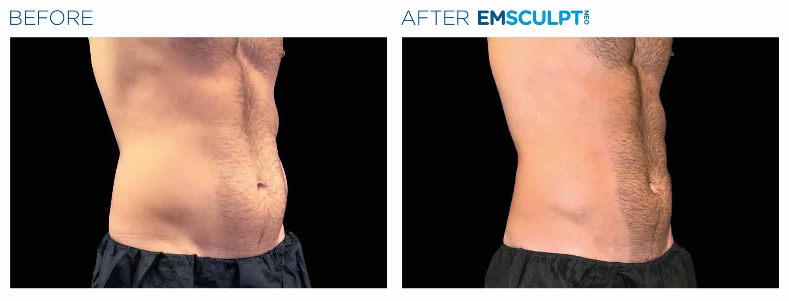
Abdomen - After 4 treatments
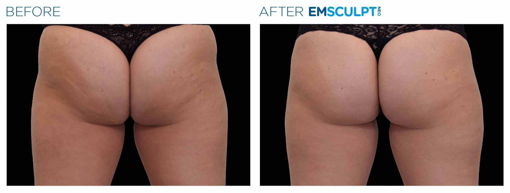
Buttocks - After 4 treatments
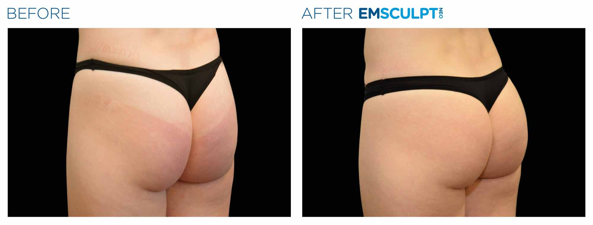
Buttocks - After 4 treatments
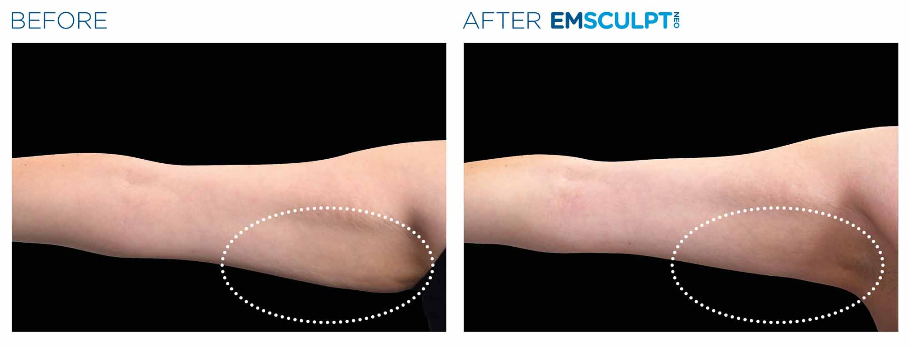
Arms - After 4 treatments
Ready to see your own transformation?
Schedule Your Consultation18 minutes from Elm Grove via Bluemound Rd east through Brookfield into Bay View. A direct, easy drive with ample free parking right at the office.
Complete range of applicator sizes ensures optimal treatment for every body area — abdomen, arms, flanks, and more.
No big-box med spa atmosphere. Private treatment rooms, one-on-one time with your provider, and a plan built around your specific goals — exactly what Elm Grove clients expect.
25% muscle growth and 30% fat reduction in clinical studies. FDA-cleared technology delivering real, lasting transformations.
Proudly serving patients throughout the greater Milwaukee area
You're here — 18 min drive
Located at 3116 S Kinnickinnic Ave in Bay View — easy parking and accessible from I-794
Everything Elm Grove residents need to know about Emsculpt NEO
Bay View Chiropractic is approximately 18 minutes from Elm Grove. Take I-794 East toward Milwaukee, exit at Oklahoma Ave, turn right and continue to S Kinnickinnic Ave. There's ample parking available right at the office. Our Elm Grove clients say it's a smooth, easy drive — and the results make every minute worthwhile.
While CoolSculpting only reduces fat through freezing, Emsculpt NEO does both — it builds muscle AND burns fat simultaneously in a single 30-minute treatment. CoolSculpting can't build muscle, and you can't treat muscle-building areas like arms or calves with it. If you want a more toned, sculpted appearance — not just fat reduction — Emsculpt NEO is the superior choice.
Emsculpt NEO pricing varies based on the number of treatment areas and your individual goals. Most clients achieve optimal results with a series of 4 treatments per area. During your free consultation at our Bay View location, we'll create a customized treatment plan and provide transparent pricing. Call (414) 295-6045 for your personalized quote.
The recommended treatment protocol is 4 sessions per area, scheduled 5-10 days apart. Each session takes just 30 minutes. Clinical studies show an average of 30% fat reduction and 25% muscle increase after the full series. Some clients choose additional treatments for enhanced results.
No downtime at all. Emsculpt NEO is completely non-invasive. You can return to work, exercise, and all normal activities immediately after your 30-minute session. Some clients experience mild muscle soreness similar to an intense workout, but this typically resolves within 24-48 hours.
We can treat multiple areas including abdomen, buttocks, arms, hips, inner thighs, and flanks (love handles). Our practice has all three applicator sizes — large, small, and edge — allowing us to precisely target any treatment area. During your consultation, we'll assess which areas will benefit most based on your goals.
Emsculpt NEO works for a wide range of body types. Ideal candidates have a BMI of 35 or below and want to build muscle while reducing fat in specific areas. It's perfect for individuals who are close to their goal weight but have stubborn areas that won't respond to diet and exercise. Schedule a free consultation to determine if you're a candidate.
Results can last 6-12 months or longer with proper diet and exercise. The muscle you build is real muscle tissue, and the fat cells that are destroyed are permanently eliminated from your body. Many clients maintain their results with quarterly maintenance treatments.
Schedule your free consultation — Elm Grove residents welcome
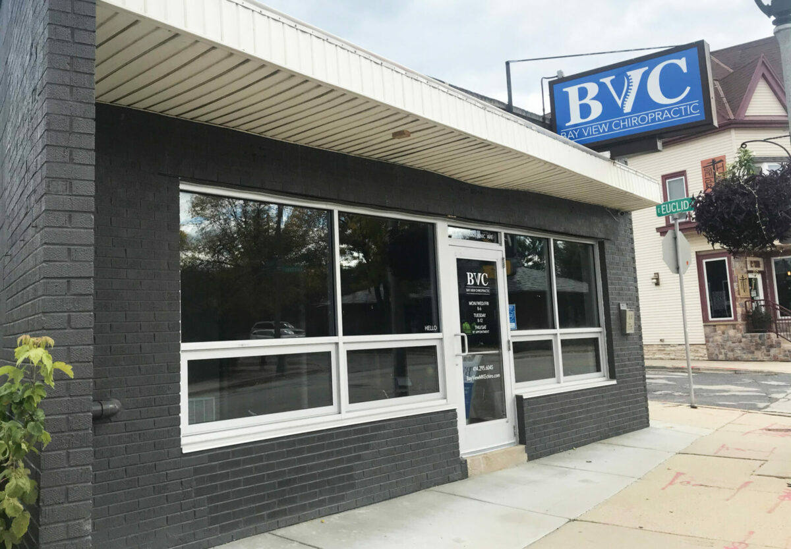
15 years serving Milwaukee
3116 S Kinnickinnic Ave
Let's discuss your body sculpting goals